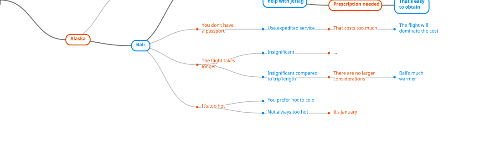
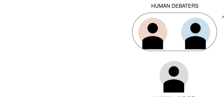

长期人工智能（AI）安全的目标是确保先进 AI 系统能可靠地与人类价值观保持一致——即它们能可靠地做人们希望它们做的事情。[1] 由于很难精确写下描述人类价值观的规则，一种方法是将与人类价值观对齐视为另一个学习问题。我们向人类询问大量关于他们想要什么的问题，训练一个反映其价值观的机器学习（ML）模型，然后优化 AI 系统，使其在学到的价值观指导下表现良好。(Christiano et al., 2017)
如果人类能可靠且准确地回答所有关于其价值观的问题，那么这个方案中唯一的不确定性将来自机器学习（ML）方面。如果 ML 运行良好，我们对人类价值观的模型会随着数据的积累而改进，并在 AI 系统学习过程中扩展到覆盖所有相关决策。不幸的是，人类的知识和推理能力有限，并且表现出各种认知和伦理偏差。(Tversky et al., 1974; Hewstone et al., 2002) 如果我们通过询问人类问题来学习价值观，我们预期不同的提问方式会以不同方式与人类偏差相互作用，从而产生质量更高或更低的答案。直接关于偏好的问题（“你更喜欢 A 还是 B？”）可能不如针对这些偏好背后推理的问题准确（“考虑到论点 S，你更喜欢 A 还是 B？”）。不同的人在回答问题的能力上可能存在显著差异，即使撇开答案质量不谈，人们之间仍会存在分歧。虽然我们有候选的 ML 方法试图从人类推理中学习(Irving et al., 2018; Christiano et al., 2018)，但我们不知道它们在现实情境中与真实人类互动时会如何表现。
我们认为 AI 安全社区需要投入研究精力在 AI 对齐的人类一侧。其中涉及的许多不确定性是经验性的，只能通过实验来回答。它们与人类理性、情感和偏差的心理学相关。关键的是，我们认为对人们如何与 AI 对齐算法互动的研究不应受现有机器学习局限性的制约。目前的 AI 安全研究往往局限于视频游戏、机器人或网格世界中的简单任务(Christiano et al., 2017; Ibarz et al., 2018; Leike et al., 2017)，但人类一侧的问题可能只在更现实的情景中出现，例如对价值 laden 问题的自然语言讨论。这一点特别重要，因为随着 ML 系统能力提升，AI 对齐的许多方面都会发生变化。
为了避免 ML 的局限性，我们可以转而进行完全由人组成的实验，用扮演这些代理角色的人来替换 ML 代理。这是一种来自人机交互（HCI）社区的“绿野仙踪”技术的变体(Kelley, 1983)，尽管在我们的案例中，这些替换不会是秘密的。这些实验将由 ML 算法驱动，但不会涉及任何 ML 系统或需要 ML 背景。在所有情况下，它们都需要精心设计实验，以在现有关于人类思维知识的基础上建设性地推进。大多数 AI 安全研究者都专注于机器学习，我们认为这不足以作为开展这些实验的背景。为了填补这一空白，我们需要具有人类认知、行为、伦理以及严谨实验设计经验的社会科学家。由于我们需要回答的问题是跨学科的，且相对于现有研究而言有些不寻常，我们认为许多社会科学领域都适用，包括实验心理学、认知科学、经济学、政治科学和社会心理学，以及邻近领域如神经科学和法律。
本文是对 AI 安全领域社会科学家的呼吁。我们相信，社会科学家与 ML 研究者之间的密切合作对于加深我们对 AI 对齐人类一侧的理解是必要的，并希望本文能引发对话与合作。我们不声称新颖性：之前将 AI 安全与社会科学结合的工作包括 Ought 的 Factored Cognition 项目(Stuhlmüller, 2018)、在学习人类偏好时考虑双曲贴现和次优规划(Evans et al., 2016)，以及比较从易出错的人类监督者那里收集演示的不同方法(Laskey et al., 2017)。其他混合 ML 与社会科学的领域包括计算社会科学(Wallach, 2016)和公平性(Mitchell et al., 2018)。我们的主要目标是扩大这些合作，并强调它们对长期 AI 安全的重要性，特别是对于当前 ML 无法企及的任务。
AI 对齐概述
在讨论社会科学家如何帮助 AI 安全和 AI 对齐问题之前，我们先提供一些背景。我们不求详尽无遗：目标是为后续关于社会科学实验的部分提供足够背景。在全文中，我们将主要讨论对齐单个人的价值观，而不是群体：这是因为对单个人的问题已经很困难，而不是因为群体情况不重要。
AI 对齐（或价值观对齐）是确保人工智能系统可靠地做人类想要的事情的任务。[2] 这里我们关注 AI 的机器学习方法：收集大量关于系统应该做什么的数据，并使用学习算法从这些数据中推断出能泛化到其他情境的模式。由于我们试图按照人们的价值观行事，最重要的数据将是来自人类关于其价值观的数据。在这个框架内，AI 对齐问题分解为几个相互关联的子问题：
我们对这三个问题都存在重大不确定性。我们将把第三个问题留给其他 ML 论文，并重点关注前两个问题，它们涉及关于人的不确定性。
通过询问人类问题来学习价值观
我们从这样一个前提开始：人类价值观过于复杂，无法用简单规则描述。我们所说的“人类价值观”指的是我们全部详细偏好的集合，而不是“幸福”或“忠诚”之类的笼统目标。复杂性的一个来源是，价值观与大量关于世界的事实纠缠在一起，在构建 ML 模型时我们无法干净地将事实与价值观分开。例如，一条涉及“性别”的规则需要一个能准确识别这一概念的 ML 模型，但 Buolamwini 和 Gebru 发现，几个在白人男性身上错误率仅 1% 的商用性别分类器，在识别黑人女性时失败率高达 34%。(Buolamwini et al., 2018) 即使人们对价值观有正确的直觉，我们也可能无法精确指定这些直觉背后的规则。(Haidt et al., 2000) 最后，我们的价值观可能因文化、法律体系或情境而异：没有一个学到的关于人类价值观的模型能普遍适用。
如果人类无法可靠地报告他们关于价值观的直觉背后的推理，或许我们可以在特定情况下做出价值判断。为了在 ML 背景下实现这一方法，我们向人类询问大量关于某个行动或结果是更好还是更坏的问题，然后用这些数据进行训练。“更好还是更坏”将同时包含事实和价值成分：对于一个训练来说话的 AI 系统，“更好的”陈述可能包括“雨从云中落下”“雨对植物有益”“很多人不喜欢雨”等。如果训练成功，得到的 ML 系统将能够复制人类对特定情境的判断，从而像人类一样对价值观拥有“模糊地接近近似规则”的能力。我们还会训练 ML 系统提出建议行动，这样它既知道如何执行任务，也知道如何判断其表现。这种方法至少在简单情况下有效，例如 Atari 游戏和简单机器人任务(Christiano et al., 2017; Ibarz et al., 2018; Bıyık et al., 2018)，以及网格世界中用语言指定的目标(Bahdanau et al., 2018)。我们询问的问题会随着系统学会执行不同类型行动而变化，这是必要的，因为关于什么更好或更坏的模型只有在有可泛化的适用数据时才会准确。
在实践中，以交互式人类问题形式存在的数据可能相当有限，因为相对于计算机，人在许多任务上既慢又昂贵。因此，我们可以用来自其他来源的静态数据来增强“从人类问题训练”的方法，例如书籍或互联网(Radford et al., 2018)。理想情况下，静态数据只能被视为关于世界的无规范内容的信息：我们可以用它来学习世界的模式，但需要人类数据来区分好模式和坏模式。
对齐的定义：推理与反思平衡
到目前为止，我们讨论的是直接询问人类某件事是更好还是更坏。不幸的是，我们不预期人们在所有情况下都能可靠地提供正确答案，原因有几个：
在这些情况下，人类可能无法提供正确答案，但我们仍然相信正确答案作为一个有意义的概念是存在的。我们有许多概念偏差：想象我们以一种帮助人类避免这些偏差的方式指出它们。想象人类拥有世界上所有的知识，并且能够随意长时间思考。我们可以将对齐定义为“在这些限制被移除后，他们给出的答案”；在哲学中这被称为“反思平衡”。(Goodman, 1983; Rawls, 2009) 我们将在下一节讨论一个试图逼近它的特定算法。
然而，反思平衡在真实人类身上的行为是微妙的；正如 Sugden 所说，人类不是“一个包裹在新古典理性实体中、只能通过易出错的心理外壳与世界互动的实体”。(Sugden, 2015) 我们实际的道德判断是通过大脑多个不同区域的混乱组合做出的，其中推理扮演“有限但重要的角色”。(Greene et al., 2002) 一个使用人类判断作为输入的可靠对齐解决方案需要应对这种复杂性，并询问特定对齐技术如何与真实人类互动。
分歧、不确定性和不作为：一个乐观的注记
对齐的解决方案并不意味着知道每个问题的答案。即使在反思平衡状态下，我们预期关于哪些行动好或坏的分歧仍会持续存在，既跨不同个体，也跨不同文化。由于我们缺乏关于世界的完美知识，反思平衡不会消除对未来预测或价值观的不确定性，任何真实的 ML 系统都至多是反思平衡的近似。在这些情况下，如果 AI 能认识到它不知道什么，并选择无论那种不确定性如何展开都能起作用的行动，我们就认为它是对齐的。
承认不确定性并不总是足够。如果我们在开车时刹车失灵，我们可能不确定是该向左还是向右躲避障碍物，但我们必须选一个——而且要快。然而，对于长期安全，我们相信通常存在一个安全的回退选项：不作为。如果一个 ML 系统认识到一个问题取决于人们之间的分歧，它可以选择一个无论分歧如何都合理的行动，或者回退到进一步的人类审议。如果我们即将做出可能灾难性的决定，我们可以推迟并收集更多数据。不作为或犹豫不决可能不是最优的，但它有望是安全的，并且符合没有强大 AI 系统的默认情景。
随着 ML 系统变得更聪明，对齐变得更难
对齐已经是当下 AI 的一个问题，原因是训练数据中反映的偏差(Mitchell et al., 2018; Buolamwini et al., 2018)，以及人类价值观与容易获取的数据源之间的不匹配（例如基于点击和点赞而不是深思熟虑的人类偏好的训练新闻 feed）。然而，我们预期对齐问题会随着 AI 系统变得更先进而变得更难，原因有两个。首先，先进系统将应用于越来越重要的任务：招聘、医学、科学分析、公共政策等。除了提高风险，这些任务需要更多推理，导致更复杂的对齐算法。
其次，先进系统可能能够给出听起来合理但以非明显方式错误答案，即使 AI 仅在一个有限领域优于人类（已有此类例子(Silver et al., 2017)）。这种误导行为与故意欺骗不同：一个从人类数据训练的 AI 系统可能没有独立于“人类说哪些答案最好”的真理概念。理想情况下，我们希望 AI 对齐算法在训练过程中揭示误导行为，向人类展示失败并帮助我们提供更准确的数据。与人际欺骗一样，误导行为可能以复杂方式利用我们的偏差，例如学会用编码的种族语言表达政策论点以听起来更有说服力。
辩论：学习人类推理
在详细讨论用于 AI 对齐的社会科学实验之前，我们需要描述一种特定的 AI 对齐方法。虽然即使对直接提问也需要社会科学实验，但对于试图触及推理和反思平衡的方法，这种需求会加剧。如上所述，反思平衡在应用于人类时是否是一个定义明确的概念尚不清楚，至少我们预期它会以复杂方式与认知和伦理偏差互动。因此，在本文剩余部分，我们专注于一个学习面向推理的对齐的具体提议，称为辩论。(Irving et al., 2018) 辩论的替代方案包括迭代放大(Christiano et al., 2018)和递归奖励建模(Leike et al., 2018)；我们只选一个，以深度优先而非广度。
我们以问答设置为例描述辩论方法对齐 AI。给定一个问题，我们让两个 AI 代理就正确答案展开辩论，然后将辩论记录展示给人类来判断。裁判决定哪个辩手提供了最真实、最有用的信息，并宣布该辩手获胜。[3] 这定义了辩手之间的两人零和博弈，目标是说服人类相信自己的答案正确。辩论中的论点可以是任何东西：支持一个答案的理由、反驳另一个答案理由的反驳、裁判可能忽略的微妙之处，或指出可能误导裁判的偏差。一旦我们定义了这个博弈，我们就可以像训练 AI 玩围棋或 Dota 2 等其他游戏一样训练 AI 系统来玩它。(Silver et al., 2017; OpenAI, 2018) 我们希望以下假设成立：
假设：在辩论博弈中的最优玩法（给出对人类最有说服力的论点）会产生真实、有用的答案。
辩论的一个例子
想象我们正在构建一个帮助人们决定去哪里度假的私人助理。该助理拥有关于人们价值观的知识，并通过辩论训练来提出支持度假决定的有说服力的论点。作为人类裁判，你知道你直观上认为哪些目的地更好，但对各种可能的度假目的地及其优缺点了解有限。关于“ 我应该去哪里度假？”的辩论可能这样开始：
如果你能可靠地在两个目的地之间做出决定，我们就可以到此为止。不幸的是，巴厘岛有一个隐藏的缺陷：
此时看起来红方获胜，但蓝方还有一个反击：
这里红方想不出更多要点，于是输给蓝方和巴厘岛。请注意，辩论不需要涵盖所有可能的论点。辩论还有很多其他可能的走向，例如：
这场辩论对红方来说也是失败（可以说更惨的失败）。假设我们相信红方非常擅长辩论，并且能提前预测哪些辩论更可能获胜。如果我们只看到关于护照的第一场辩论并决定支持巴厘岛，我们可以将其视为证据，表明任何其他辩论也会支持巴厘岛，因此巴厘岛是正确答案。下面显示了这个假设辩论树的一个较大部分：

如果训练过的辩手不擅长预测哪些辩论会获胜，答案质量将会下降，因为辩手将无法想到重要的论点和反驳。然而，只要双方实力相当，我们可以希望至少结果不是恶意的：误导行为仍然是失败策略。我们暂时搁置辩手的实力，转而讨论裁判的能力。
人们作为裁判足够好吗？
“事实上，几乎所有关于图灵测试的实用层面写作都是关于如何制作好机器人，剩下的小部分是关于如何成为好裁判。” Brian Christian，《最像人类的人》(Christian, 2011)
与通过直接向人类提问来学习一样，辩论是否产生对齐行为取决于人类裁判的推理能力。与直接提问不同，辩论有可能给出超出裁判在没有帮助时能提供的正确答案。这是因为足够强大的裁判能够跟上他们自己想不出的论点，检查复杂推理的自洽性以及与人类可验证事实的一致性。一个有偏差但在偏差被揭示后愿意调整的裁判可能导致无偏见的辩论，或者一个能检查事实但不知道从哪里查起的裁判可能被诚实的辩手帮助。如果假设成立，误导辩手将无法反驳诚实辩手的要点，因为诚实的要点在裁判看来会显得更一致。
另一方面，我们也可以想象辩论走向反面：放大偏差和推理失败。一个有伦理偏差且乐于接受强化该偏差陈述的裁判可能导致更有偏差的辩论。一个有太多确认偏差的裁判可能乐于接受误导性的证据来源，并且不愿意接受证明该证据错误的论点。在这种情况下，最优辩论代理可能相当恶意，利用裁判的偏差和弱点，用有说服力但错误的论点获胜。[4]
在这两种情况下，辩论都起到放大器的作用。对于强大的裁判，这种放大是积极的，消除偏差并为裁判模拟额外的推理能力。对于弱裁判，偏差和弱点本身会被放大。如果这个模型成立，辩论将具有阈值行为：它对能力高于某个阈值的裁判有效，而对低于阈值的裁判失败。[5] 假设阈值存在，目前尚不清楚人们是在阈值之上还是之下。人们有能力进行一般推理，但我们的能力有限且充满认知偏差。人们有能力进行高级伦理情感，但也充满有意识和无意识的偏差。
因此，如果辩论是我们用来对齐 AI 的方法，我们需要知道人们作为裁判是否足够强大。换句话说，人类裁判是否足够擅长辨别辩手是否在说真话。这个问题取决于许多细节：所考虑的问题类型、裁判是否接受过训练，以及对辩手能说什么的限制。我们相信，需要通过实验来确定人们是否是足够的裁判，以及哪种形式的辩论最能寻求真相。
从超级预测者到超级裁判
这里与概率预测任务的类比很有用。Tetlock 的“良好判断项目”表明，一些业余爱好者预测世界事件的能力明显优于他们的同龄人和许多专业预测者。这些“超级预测者”在多年内保持预测准确性（没有回归均值），能够在有限时间和信息下做出预测(Mellers et al., 2015)，并且似乎比非超级预测者更不易受认知偏差影响（(Tetlock et al., 2016)，第 234-236 页）。超级预测能力并非不可改变：它可以追溯到特定的方法和思维过程，通过仔细练习可以改进，如果将超级预测者组成团队则可以放大。对于一般预测者，简短的概率训练显著提高了预测能力，即使在训练后 1-2 年仍然有效。我们相信，对于辩论和其他 AI 对齐算法，可以开展类似的研究计划。在最佳情况下，我们能够发现、训练或组建“超级裁判”，并有高度信心地认为，以他们为裁判的最优辩论将产生对齐行为。
在预测案例中，大部分研究困难在于组建一个高质量预测问题的大型语料库。类似地，衡量人们作为辩论裁判有多好也并不容易。我们希望将辩论应用于没有其他真相来源的问题：如果我们有那样的真相来源，我们就会直接在其上训练 ML 模型。但如果没有真相来源，就没有办法衡量辩论是否产生了正确答案。这个问题可以通过从简单、可验证的领域开始来避免，在这些领域中实验者知道答案但裁判不知道。“成功”意味着获胜的辩论论点在讲述外部已知的真相。随着我们扩展到更复杂、价值 laden 的问题，挑战会变得更难，我们稍后会详细讨论。
辩论只是其中一种可能的方法
如前所述，辩论并不是唯一试图学习人类推理的方案。辩论是迭代放大的一种修改版本(Christiano et al., 2018)，它使用人类将难题分解为更容易的问题，并训练 ML 模型与这种分解保持一致。递归奖励建模是进一步的变体(Leike et al., 2018)。逆强化学习、逆奖励设计及其变体试图从人类行动中反推出目标，同时考虑可能影响这种推理的局限性和偏差(Hadfield-Menell et al., 2016; Hadfield-Menell et al., 2017)。研究人类如何与 AI 对齐互动的必要性适用于所有这些方法。其中一些工作已经开始：Ought 的 Factored Cognition 项目使用人类团队来分解问题并重新组装答案，模拟迭代放大(Stuhlmüller, 2018)。我们相信，从一种方法中获得的关于人类表现的知识很可能会部分泛化到其他方法：关于如何构建寻求真相辩论的知识可以告知如何构建寻求真相的放大，反之亦然。
辩论所需的实验
回顾一下，在辩论中我们有两个 AI 代理参与辩论，试图说服人类裁判。辩手只被训练来赢得比赛，他们没有独立于人类判断的真相动机。在人类一侧，我们想知道人们在辩论中作为裁判是否足够强大以使这个方案奏效，或者如果不行，如何修改辩论来修复它。不幸的是，自然语言中的实际辩论远远超出现有 AI 系统的能力，因此之前关于辩论和类似方案的工作仅限于合成或玩具任务(Irving et al., 2018; Christiano et al., 2018)。
与其等待 ML 赶上自然语言辩论，我们建议用全人类辩论来模拟我们最终的设置（两个 AI 辩手和一个人类裁判）：两个人类辩手和一个人类裁判。由于全人类辩论不涉及任何机器学习，它变成了一个纯粹的社会科学实验：由 ML 考虑驱动，但不需要 ML 专业知识来运行。这让我们能够专注于 AI 对齐不确定性中特定于人类的那部分。

为了使人类+人类+人类的辩论实验具体化，我们必须选择谁来担任裁判和辩手，以及考虑哪些任务。我们还可以选择以各种方式构建辩论，其中一些与裁判的选择重叠，因为我们可以指示裁判惩罚偏离给定格式的行为。我们所说的任务是指我们的辩论将试图解决的问题，以及提供给辩手或裁判的任何信息。然后，这样的实验将试图回答以下问题：
问题：对于给定的任务和裁判，获胜的辩论策略是否诚实？
“获胜策略”这一前提很重要：一个随机挑选辩手的实验可能会得出诚实行为获胜的结论，却忽略了更熟练的辩手会学会成功撒谎的事实。我们可以尝试通过训练辩手、让他们互相练习、筛选出更常获胜的辩手等方式来解决这个问题，但我们仍会对是否存在更好的策略存在不确定性。即使假设我们能找到或训练出强大的辩手，如果我们想为最终的 AI+AI+人类设置提供有信息量的代理，选择任务和裁判也相当棘手。以下是我们选择任务时的一些期望约束：
用单个实验满足所有这些标准可能不可能。其中几个标准存在张力：(1) 和 (2) 本质上是“不要太难”和“不要太容易”，而对问题类型的任何限制都可能难以找到大量问题、裁判或辩手。现实任务比合成任务难得多，而合成任务如下面讨论的那样容易满足许多标准。因此，我们可能需要从合成任务开始，随着时间推移逐步转向现实任务。 接下来我们转向几个实验例子，看看我们能同时满足多少标准。
合成实验：单像素图像辩论
作为人类+人类+人类辩论实验的第一个原型，我们之前构建了一个原型网站，其中两个辩手就图像内容展开争论(Irving et al., 2018)。我们选择一张猫或狗的图像，并将图像展示给两个辩手但不给裁判。一个辩手诚实并为图像的真实内容辩护；另一个辩手撒谎。辩手可以与裁判交谈，并通过在图像上画矩形来说明他们的观点，但裁判只能看到矩形。在辩论结束时，每个辩手被允许向裁判揭示一个像素，这是辩论中唯一不能撒谎的部分。
![A picture of a puppy with long floppy ears next to an animated transcript of a debate between two fictional agents arguing whether the picture shows a dog or a cat. A transcript of the debate follows: Red: It's a dog. Here's a long, floppy ear. [Red highlights a rectangle containing a floppy dog ear] Blue: No, it's a cat. Here's one of its pointy ears. [Blue highlights a part of the floppy dog ear that looks like a pointy cat ear.] Red: that does look like an ear sloped to the right, but if it really was then part of the head would be here. Instead, there's brick. [Red highlights bricks in the background of the picture.] Blue: The ear is pointing out from behind some bricks. Red: The dog is in front of the bricks. If it was behind, there would be an edge here [Red highlights an area where the bricks would be in front of the animal head, but that area just shows the dog ear], but the rectangle is all the same color. Blue: I resign.](../images/2019-safety-needs-social-scientists/debate-animation.gif)
在非正式游戏中，诚实辩手大多数时候获胜。虽然裁判只能检查一个像素，但诚实玩家可以试图将撒谎者逼向关于图像越来越小区域的分歧，直到一个像素足以揭示谎言。然而，很难知道这是一个真实结果，还是一个不会延续到训练 AI 的伪影。有很多方法可以毁掉游戏，例如裁判要求每个玩家花 15 秒尽可能多地说出关于图像的细节。更糟糕的是，这个技巧以有利于诚实玩家的方式毁掉游戏，他们可以轻松说出许多真实细节，而人类撒谎者可能难以流利地快速撒谎。因此，我们对在没有更仔细实验设计、建立在现有社会科学研究实验知识基础上的情况下进行这个实验的完整版本持谨慎态度。
作为合成实验，单像素辩论满足我们关于全人类辩论的许多实验标准。真实答案对辩手来说是显而易见的，他们比裁判知道得多，因为只有辩手看到图像。对只在辩论过程中看到一两个像素的裁判来说，任何事情都是合理的。由于论点最终归结为单个像素，“完整论点”将是一个巨大的像素列表以及它们如何相关，这迫使辩手相互逼迫并聚焦于分歧。单个像素构成了可验证的事实，我们有以随机选择的图像形式存在的无穷无尽的问题。不太幸运的是，裁判很容易强迫“破绽”来揭示谁在撒谎，这个任务与偏差没有明显关系，而且相当不现实。
现实实验：领域专家辩论
对于更有趣的任务，我们可以找到两个在某个领域是专家的辩手，在他们的专业领域挑一个问题，并用一个外行人作为裁判。辩手可以是某个科学、法律或伦理领域的专家，但“领域专业知识”也可以意味着关于爱好、当地习俗、体育或任何裁判不知道的其他主题的知识。我们再次选择一个辩手撒谎，一个说真话。为了保证真相来源，我们可以选择一个有公认答案的问题，无论是在两个辩手之间还是更广泛地在他们的领域中。这只是近似真相，但对于有信息量的实验来说已经足够好了。我们还指定裁判可以访问哪些事实：关于物理学的辩论可能允许辩手引用 Wikipedia 的一句或一段话，或许对允许的页面有限制。
专家辩论满足我们大多数期望，并且很可能通过选择与这些偏差重叠的领域来针对特定偏差（例如种族或性别偏差）。找到合适的辩手可能相当困难或昂贵，但这可以通过投入资源（ML 是一个资金充足的领域）、扩大考虑的领域专业知识种类（足球、美式橄榄球、板球），或者让实验有趣到足以吸引志愿者来解决。然而，即使能找到领域专家，也不能保证他们是辩论这项游戏的专家。除了法律、政治或哲学可能例外(Schopenhauer, 1896)，领域专家可能没有被训练来构建故意误导但自洽的叙事：他们可能只是擅长试图说真话的专家。
我们尝试了几场使用理论计算机科学问题的非正式专家辩论，主要教训是辩论的结构非常重要。辩手被允许指向 Wikipedia 上数学定义的一小段，但不能指向直接回答问题的任何页面。为了减少破绽，我们首先尝试只与一个外行人进行最小交互来写出完整的辩论记录，然后将完成的记录展示给另外几个外行裁判。不幸的是，即使是辩论进行时在场的外行人也选择了撒谎的辩手作为诚实的，原因是误解了问题（问题是复杂度类 P 和 BPP 是否可能相等）。结果，整个辩论过程中诚实辩手都没有理解裁判在想什么，并且未能纠正一个简单但重要的误解。我们在第二场辩论中通过让裁判全程提问来修复这个问题，但仍然将完成的记录展示给第二组裁判以减少破绽。第二场辩论的记录见附录。
其他任务：偏差测试、概率谜题等
合成图像辩论和专家辩论只是可能任务的两个例子。要找到满足我们所有标准的任务需要更多思考，这些标准会随着实验进展而变化。从现有社会科学研究中汲取经验将很有用，因为有许多带有现有研究结果的认知任务。如果我们能将这些任务映射到辩论，我们就可以将辩论直接与心理学和其他领域的基线进行比较。
例如，Bertrand 和 Mullainathan 针对真实招聘广告发送了约 5000 份简历，在白人和非裔美国人听起来的名字之间随机化简历(Bertrand et al., 2004)。在其他方面相同的简历下，名字的选择显著改变了获得回应的概率。这个实验对应于直接问题“我们应该根据这份简历回电吗？”如果我们引入几步辩论呢？基于名字或从名字隐含推断出的反对候选人的论点可能听起来明显种族主义，并说服至少一些裁判远离歧视。不幸的是，这样的实验必然不同于 Bertrand 等人的原始实验，在原始实验中雇主没有意识到他们是实验的一部分。请注意，这个实验即使真相来源是部分的也能工作：我们不知道特定简历是否应该被录用，但大多数人会同意答案不应该取决于候选人的名字。
对于影响概率推理和决策的偏差，有大量文献探讨人们如何在赌局之间做选择，例如“你更喜欢 2 美元确定到手，还是 40% 概率 1 美元、否则 3 美元？”(Kahneman, 1979; Tversky et al., 1992) 例如，Erev 等构建了一个 11 维赌局空间，足以重现 14 种已知认知偏差，从中可以算法生成新实例(Erev et al., 2017)。关于赌局的辩论会减少认知偏差吗？这里的一个困难是，如果期望效用计算足以证明答案，简单赌局可能无法满足“决定性论点长于辩论限制”的标准，这使得撒谎辩手难以有意义地竞争。
有趣的是，Chen 等使用类似于人类+人类+人类辩论的设置来提高在合成“关系抽取”任务中收集的人类数据质量(Chen et al., 2018)。人们首先被要求给出直接答案，然后让意见不一的两两小组讨论并可能更新他们的答案。这里辩手和裁判是同一批人，但从人类中提取更高质量信息的总体目标与辩论是共享的。
社会科学能帮助我们回答的问题
我们已经概述了通过询问人类问题来学习 AI 目标的一般方案，并讨论了如何使用辩论来强化我们通过针对结论背后的推理所能学到的东西。无论我们使用直接问题还是类似辩论的东西，任何能给我们更高质量答案的干预都更有可能产生对齐的 AI。这些答案的质量取决于人类裁判，而社会科学研究可以帮助衡量答案质量并加以改进。让我们更详细地讨论我们想回答的问题类型，以及我们希望用这些信息做什么。虽然我们将把这些问题表述为它们如何适用于辩论，但其中大多数适用于任何其他从人类学习目标的方法。
我们相信这些问题需要社会科学实验来令人满意地回答。
鉴于我们在 ML 之外的经验不足，我们无法精确表述我们需要的所有不同实验。解决这个问题的唯一方法是与更多具有不同背景和专业知识的人交谈。我们已经开始了这个过程，但渴望与社会科学家进行更多关于可以运行什么实验的对话，并鼓励其他 AI 安全工作也同样参与。
乐观的原因
我们相信理解人类如何与长期 AI 对齐互动虽然困难但可能实现。然而，这将是一个新的研究领域，我们希望坦率面对其中的不确定性。在本节和下一节，我们讨论关于这项研究是否会成功的一些乐观和悲观原因。我们专注于特定于人类不确定性和相关社会科学研究的议题；关于辩论中 ML 不确定性的类似讨论请参考我们之前的工作(Irving et al., 2018)。
工程 vs. 科学
大多数社会科学寻求理解“野生”中的人类：能泛化到人们日常生活的結果。由于对这些生活控制有限，实验室与现实生活之间的差异从科学角度看是不好的。相比之下，AI 对齐寻求提取人类想要的最好版本：我们的目标是工程而非科学，我们有更多干预的自由。如果辩论中的裁判需要训练才能表现良好，我们可以提供那种训练。如果有些人仍然不能提供好数据，我们可以将他们从实验中移除（只要这个过滤器不会造成太多偏差）。这种干预自由意味着理解和改善人类推理的一些困难可能不适用。然而，科学仍然是必要的：一旦我们的干预到位，我们需要正确知道我们的方法是否有效。由于我们的实验将是最终目标的不完美模型，精心设计以最小化这种不匹配是必要的，就像现有社会科学所要求的那样。
我们不需要回答所有问题
我们最强大的干预是放弃：认识到我们无法回答某些类型的问题，并防止 AI 系统假装回答。人类可能在某些主题上是好裁判，但在其他主题上不是，或者在某些类型推理上是好裁判，但在其他类型上不是；如果我们发现这一点，我们可以相应调整我们的目标。放弃某些类型的问题既可以在 ML 一侧实现，使用仔细的不确定性建模来知道我们何时不知道，也可以在人类一侧通过训练裁判理解他们自己的不确定性领域来实现。虽然我们将尝试制定能自动检测不确定性领域的 ML 系统，但我们在社会科学一侧获得的关于人类不确定性的任何信息都可以用来增强 ML 不确定性建模并测试 ML 不确定性建模是否有效。
相对准确可能就足够了
假设我们有各种不同的方式来与人类构建辩论。理想情况下，我们希望达到“辩论结构 A 以 90% 置信度是寻求真相的”这样的结果。不幸的是，我们可能对这种绝对结果能否泛化到先进 AI 系统缺乏信心：它可能在简单任务的实验中成立，但在以后崩溃。然而，即使我们无法达到这样的绝对结果，我们仍然可以希望得到“辩论结构 A 可靠地优于辩论结构 B”这样的相对结果。这样的结果可能更有可能泛化到未来，并且假设它确实如此，我们就会知道要使用结构 A 而不是 B。
我们不需要确定最佳对齐方案
随着 AI 安全领域推进到越来越先进的 ML 系统，我们预期 ML 一侧和人类一侧的研究会合并。在这种合并之前开始社会科学实验将给该领域一个领先优势，但我们也可以利用预期的合并来简化我们的目标。如果社会科学研究缩小了人类友好 AI 对齐算法的设计空间但没有产生单一最佳方案，我们可以在机器准备好后测试这个更小的设计空间。
负面结果也很重要！
如果我们从社会科学角度测试一个 AI 对齐方案而它失败了，我们就学到了有价值的信息。有各种各样的提议对齐方案，及早了解哪些不起作用会给我们更多时间切换到其他方案，或在政策层面干预以减缓危险的发展。事实上，鉴于我们相信 AI 对齐对更先进代理更难，负面结果可能更容易被相信，因此比不太可信的正面结果更有价值。
担忧的原因
接下来我们转向社会科学关于 AI 对齐的实验可能无法产生有用结果的原因。我们强调，有用结果可能是正面和负面的，因此这些不是对齐方案可能失败的原因。我们主要担心的是单方面的，即实验说一个对齐方案有效而实际上它没有，尽管反方向的错误也是不可取的。
我们的期望存在冲突
如前所述，我们在挑选实验任务时的一些标准存在冲突。我们想要足够有趣（不要太容易）的任务，有可验证的地面真相来源，不要太难等等。“不要太容易”和“不要太难”存在明显的冲突，但还有其他更微妙的困难。有知识来辩论有趣任务的领域专家可能不是那些能有效撒谎的人，而这两种限制都使得难以收集大量数据。有效撒谎对于有意义的实验是必需的，因为训练过的 AI 可能毫不费力地撒谎，除非撒谎是赢得辩论的糟糕策略。测试伦理偏差是否干扰判断的实验可能更难找到具有可靠地面真相的任务，尤其是在人们之间存在重大分歧的主题上。自然的出路是使用许多不同实验来覆盖我们不确定性的不同方面，但这会花费更多时间，并且可能无法注意到期望之间的相互作用。
我们想在最优辩手的情况下衡量裁判质量
对于辩论，我们的最终目标是理解裁判是否能够确定谁在说真话。然而，我们特别关心的是在辩手表现良好的情况下裁判是否表现良好。因此我们的实验有一个内/外优化结构：我们首先训练辩手进行良好辩论，然后衡量裁判表现如何。这增加了时间和成本：如果我们改变任务，我们可能需要找到新的辩手或重新训练现有辩手。更糟糕的是，人类辩手可能不擅长执行任务，无论是因为倾向还是能力。表现差特别糟糕，如果它是单方面的并且只适用于撒谎：一个辩手可能由于倾向或缺乏练习而在撒谎上更差，因此诚实辩手的获胜可能是误导性的。
ML 算法会改变
ML 系统何时或是否会达到各种能力水平尚不清楚，用于训练它们的算法会随着时间演化。未来的 AI 对齐算法可能类似于今天提出的算法，也可能非常不同。然而，我们相信在人类一侧获得的知识会部分转移：即使辩论被取代，关于辩论的结果也会教会我们如何从人类那里收集数据。算法可能会改变；人类不会。
需要强大的跨领域泛化
无论我们的实验设计得多么仔细，人类+人类+人类辩论都不会与 AI+AI+人类辩论完全匹配。我们正在寻求能泛化到我们用未来 AI 替换人类辩手（或类似）的情境的研究结果，这是一个艰难的要求。这个问题是根本性的：我们没有未来的先进 AI 系统来玩，我们希望现在就开始了解人类不确定性。
缺乏哲学清晰性
任何 AI 对齐方案都既是一个训练 ML 系统的算法，也是一个关于什么是对齐的提议定义。然而，我们不预期人类符合任何哲学上一致的价值观概念，像反思平衡这样的概念在应用于真实人类判断时必须谨慎对待，以免它们崩溃。幸运的是，像辩论这样的算法不必预设哲学一致性：一场说服人类裁判的来回对话即使人类依赖启发式、直觉和情感也是有意义的。辩论在这个混乱设置中是否有效并不明显，但如果我们利用不作为偏差、不确定性建模和其他逃生出口，则存在希望。我们相信缺乏哲学清晰性是投资社会科学研究的论据：如果人类不简单，我们必须应对他们的复杂性。
挑战的规模
如果我们开发出人工通用智能（AGI），长期 AI 安全尤其重要，OpenAI 章程将其定义为在大多数经济上有价值的工作上超越人类的高度自主系统(OpenAI, 2018)。如果我们想用来自人类的奖励学习来训练 AGI，目前尚不清楚需要多少样本才能将其对齐。我们可以尽可能用通过阅读语言、互联网和其他信息来源获得的世界知识来替换人类样本。但很可能仍然需要来自人们的大量样本。由于更多样本意味着更少噪声和更多安全，如果我们对需要多少样本不确定，那么我们会想要很多样本。
大量样本意味着招募很多人。我们不能排除需要涉及数千到数万人进行数百万到数千万次简短交互：回答问题、判断辩论等。我们可能需要训练这些人成为更好的裁判，安排同行判断彼此的推理，确定谁在判断上做得更好并给予他们更多权重或更监督的角色，等等。社会科学一侧将需要许多研究者来从裁判那里提取最高质量的信息。
这种规模的任务将是一个大型跨学科项目，需要密切合作，其中不同背景的人填补彼此缺失的知识。如果机器学习达到这个规模，尽快开始这些合作很重要。
结论：你能如何提供帮助
我们已经论证 AI 安全社区需要社会科学家来解决关于 AI 对齐算法的一个主要不确定性来源：人类会给出问题的好答案吗？这种不确定性难以用常规机器学习实验来解决，因为机器学习还很原始。我们仍处于自然语言和其他任务性能的早期阶段，人类奖励学习的问题可能只在我们还无法处理的任务上显现。
我们提出的解决方案是用人替换机器学习，至少直到 ML 系统能够参与我们感兴趣的复杂辩论为止。如果我们想理解一个用 ML 和人类参与者玩的游戏，我们就用人类替换 ML 参与者，看看全人类游戏如何进行。对于辩论的具体例子，我们从两个 ML 辩手和一个人类裁判的辩论开始，然后切换到两个人类辩手和一个人类裁判。结果是一个纯粹的人类实验，由机器学习驱动，但任何具有扎实实验社会科学背景的人都可以进行。这不会是一个容易的实验，这正是我们应该尽快开始的原因。
如果你是对此类问题感兴趣的社会科学家，请与 AI 安全研究者交谈！我们对对话和密切合作都感兴趣。有许多机构从事使用奖励学习的安全工作，包括我们自己的机构 OpenAI、DeepMind，以及 Berkeley 的 CHAI。AI 安全组织 Ought 已经在探索类似问题，询问迭代放大在人类身上的表现如何。
如果你是感兴趣或已经在从事安全工作的机器学习研究者，请思考一旦我们推进到超出当前机器学习能力的任务，对齐算法将如何工作。如果您偏好的对齐方案以重要方式使用人类，你能否通过用人类替换部分或全部 ML 组件来模拟未来？如果你能想象这些实验但觉得自己没有专业知识来执行它们，那就找有专业知识的人。